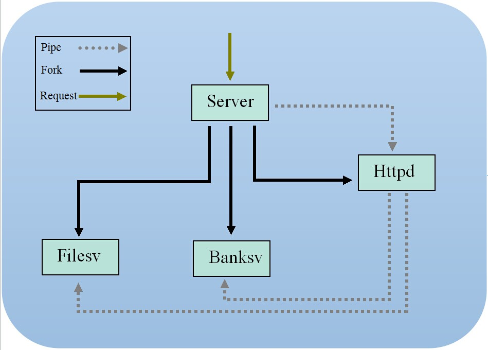

Lab 3: Privilege SeparationLab OverviewIn this lab, you'll explore privilege separation. The key insight of privilege separation is to give minimal privilege to each component of a system, so that when one component of the system is comprised, other components will not be comprised too.To make the discussion concrete, you will do this lab for the Touchstone web server, that is, you will privilege-separate the Touchstone web server by giving each component appropriate privilege. To be specific, you will first examine possible bugs in the source code of the Touchstone web server, and comprise the Touchstone web server by designing and performing exploitations. Finally, you will break up the application into privilege-separated components to minimize the effects of possible vulnerabilities. This lab consists of three parts:
Lab EnvironmentDownload lab 3 code to start with. In order to bind to the port 80 (the default HTTP port), you will start thetouchstone web server with the root
privilege in this lab (in Linux, only
root-privilege process can bind to port less than 1024):
$ make
$ sudo ./touchstone
Password: (enter seed password)
Open your browser and go to this URL
http://127.0.0.1, you will get a web page. Contact
us, if you do not get this page.
In this lab, you will disable ASLR:
$ su root
Password: (enter root password)
# sysctl -w kernel.randomize_va_space=0
which will make your exploitations easier. However, keep in kind
that it's also possible to compromise the application
when ASLR and other protections are on, just as you did
in lab 2.
Part A: The Touchstone Web ServerTo help you finish this lab, let's first examine the architecture and source code of the Touchstone web server, which differs from the ones that you've seen in previous labs.
The overall design and architecture
of the Touchstone web server is described in the following
figure. The server consists of three main components: the
server (

The server launches the HTTP dispatcher
Next, the dispatcher will route the requests to the corresponding service. The service continues to read the HTTP headers and the body (if any), and respond appropriately. Now, the Touchstone is up. The main design consideration for the current architecture is to simplify design and to increase throughout. By routing different request into different service, each service can be kept as simple as possible and be implemented without too much difficulty. By using a multi-process architecture, requests can be processed concurrently and high throughout can be achieved (hopefully). Exercise 1.
In order to gain deeper understanding of the internal
architecture of the Touchstone web server, let's
use gdb to debug the First, launch the server: $ sudo ./touchstonenow use gdb to attach to the banksv service:
$ ps -a PID TTY TIME CMD 24356 pts/0 00:00:00 touchstone 24357 pts/0 00:00:00 filesv 24358 pts/0 00:00:00 banksv 24359 pts/0 00:00:00 httpd $ sudo gdb Password: (enter seed password) (gdb) attach 24358 Attaching to process 24358 (gdb) b Handle_post Breakpoint 1 at 0x80d0d9f: file handle.c, line 28. (gdb) set follow-fork-mode childthis will set a break point on the function Handle_post.
Now open your browser and visit the URL 127.0.0.1,
click the Register (or the Login) button,
a POST http request will be sent to the Touchstone (as indicated
by the
FORM), and the above break point will be hit. Now let's
continue the execution:
(gdb) c Continuing. (waiting user for clicking register or login button from index.html) [New process 25533] [Thread debugging using libthread_db enabled] Breakpoint 1, Handle_post (uri=0xbf951084 "/", fd=6) at handle.c:74 74 char *info = "HTTP/1.1 200 OK\r\n\r\n";And then single-step the source code, examine carefully where the user input goes: (gdb) n 75 Body_t *b = getBody(&num); (gdb) n 77 char *name = b[0]->value; (gdb) n 78 char *pwd = b[1]->value; (gdb) n 80 char *type = b[num-1]->value; (gdb) p name $3 = 0x90ca4b8 "sa12" <----login user name (gdb) p pwd $4 = 0x90ca6c0 "1234" <----login user password (gdb) p type $6 = 0x90ca8c8 "Login" <----Post Request typeNext, the user input will be be fed into the database:
(gdb) n
82 init_db();
(gdb) s
init_db () at ./sql_lite3/sqlhelper.c:32
32 if(open_db()==SUCCESS){
.....
Exercise 2. Finally, you will write some code. Extend the current sqlite3 user table, to add more information. For instance, you can add time and IP address to the user table, so that when one user has logged in, the web page can display the last login time, the current login address, etc.. You may want to read some sqlite3 documentations. Part B: Jail and Jail BreakingIn this part, we will discuss jail and jail breaking. Jail is a special form of sandbox, which provides a restricted environment to run programs that are not completely trustworthy. For example, if the program is downloaded from an untrusted source, running the program in an unrestricted environment can expose the system to potential risks. If these programs can be executed in a restricted environment, even if the programs behave maliciously (the programs might contain malicious contents or they might be compromised by attackers during the execution), their damage is confined within the restricted environment.JailRecall that in order to bind to the port 80, the server, along with the dispatcher and the services, run with the root privilege. However, this may incur serious security vulnerabilities. To make the discussion concrete, let's try to steal some some important or sensitive files from the Touchstone host.
The Exercise 3.
Modify the code snippet
in the $ ./browser 80 sock_client = 3 Response = HTTP/1.1 200 OK root:x:0:0:root:/root:/bin/bash daemon:x:1:1:daemon:/usr/sbin:/bin/sh ...... To defeat this kind of attack, one can use the the basic idea of choot to isolate code that has potential security vulnerabilities.
Exercise 4.
Add some code to the $ cd server $ make $ sudo ./chroot-setup.sh + grep -qv uid=0 + id + rm -rf /jail + mkdir -p /jail + cp -p index.html /jail + ./chroot-copy.sh touchstone /jail + ./chroot-copy.sh httpd /jail ... $ cd /jail $ sudo ./touchstoneNow re-do exercise 3 to visit the file /etc/passwd. If your chroot protection
works, your browser will behave like this (leaking
no sensitive information):
$ ./browser 80 sock_client = 3 Response = HTTP/1.1 200 OK File does not exist! Jail BreakingThe basic idea of jail is to confine each process into its own (fake) root directory, however, this is not true for root-privileged processes. If a root-privileged process is comprised, the process may escape from the jail, this is called jail breaking. Unfortunately, this is pretty true for the Touchstone web server: all process are root-privileged by default, so it's possible for these process to break the jail, once they are comprised.Challenge! Perform the buffer-overflow attack, as you did in the lab 1, inject shell code into the server and execute. The primary task of the shell code is to break the jail. And then read or unlink the file /etc/passwd. Part C: Privilege SeparationPrivilege separation is a technique to divide a program into small parts which are limited to the specific privileges they require in order to finish a specific task. This is used to mitigate the potential damage of a computer security attack.Two aspects make privilege separation challenging in the real world and in this lab. First, privilege separation requires that you take apart the application and split it up in separate pieces. Although it is relatively easy to split the Touchstone web application, spliting real-world applications may be very difficult, if not impossible. And it's very common that you must redesign certain parts to make privilege separation possible. Second, you must ensure that each piece runs with minimal privileges, which requires setting permissions precisely and configuring the pieces correctly. Hopefully, by the end of this lab, you'll have a better understanding of why many applications have security vulnerabilities related to failure to properly separate privileges: proper privilege separation is hard! Having surveyed the structure of Touchstone and acquired the base knowledge about jail, now let's start to think about how to apply privilege separation to the infrastructure of Touchstone, so that bugs in one component won't allow an adversary to comprise the whole system. Privilege-separate the web server setup using Unix principals and permissionsAs introduced inPart A, Touchstone consists of three
parts: the httpd(dispatcher), the filesv
service and the banksv service. The
httpd dispatcher routes requests to corresponding
services. As the httpd daemon runs
with root privilege, so it can
Exercise 5.
Modify your browser code to inject some shell code
the server. Your shell code attack the The reason for this problem is that Touchstone violates one basic security principal: least privilege. Different process should not delete some files belonging to another process: the dynamic services should not unlink static files that the server is serving. Conversely, the static service should not touch the databases. Here, you can see the reason why the Touchstone web server is splited into different services. To mitigate this problem, you should run the dispatcher and these services under unprivileged users rather than root. Also, you should set up appropriate permissions for files and databases. Exercise 6.
Modify the function in the file
Set file and directory permissions to ensure that the
static service cannot read the database files from the
dynamic service, and vice versa. Try to modify
the Exercise 7. Compile the new Touchstone web server: $ make $ sudo ./chroot-setup.sh + grep -qv uid=0 + id + rm -rf /jail + mkdir -p /jail + cp -p index.html /jail + ./chroot-copy.sh touchstone /jail + ./chroot-copy.sh httpd /jail ... $ cd /jail $ sudo ./touchstonetry to perform buffer overflow attack against the web serve. Can you trick the web server into mis-behaving? Is it exploitable? Challenge! Perform buffer overflow attack on the Touchstone web server. Can you succeed? If yes, how? HandinThis completes the lab. Remember to hand in your solution to the information system. |